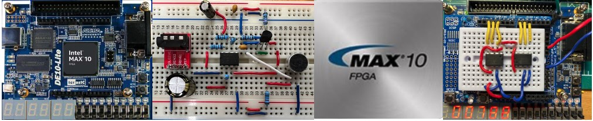

Department of Electrical & Electronic Eng. (EEE) BEng & MEng 2nd Year
ELEC50001 Circuits and Systems (Oct - Dec 2026)
Professor Peter Y. K. Cheung
|  Department of Electrical & Electronic Eng. (EEE) BEng & MEng 2nd Year |
Aims & Objectives
This module builds on the first-year modules relating to analogue and digital circuits, computer architecture, and programming, to teach students how to analyse and design electronic circuits with a system level perspective. The aim of this module is to provide students with the theoretical foundations, the design techniques and hands-on experiences of acquiring physical analogue signals, pre-processing them, converting into digital form, then process these in a digital programmable hardware on a Field Programmable Gate Array (FPGA). Unlike last year's module on circuits, year students will learn to process signals that have noise and electronic hardware that are non-ideal.
By the end of the course, you should be able to:This course is supported by 6 Laboratory Experiments based a Lab-in-a-Box to enable students to conduct all the experiments in-person and at home.
RECOMMENDED TEXTBOOKS
COURSE SCHEDULE AND CONTENTS
Date |
Topics |
Resources |
6 Oct |
||
12 Oct |
LECTURE NOTES
Lecture 1 - Introduction to circuits & systems (notes) Lecture 2 - Amplification and Single-Rail Op-amp (notes)
LAB INSTRUCTIONS
Lab 1- Amplification & Single-rail Op-Amp
PROBLEM SHEETS
Problem Sheet 1 (solutions)